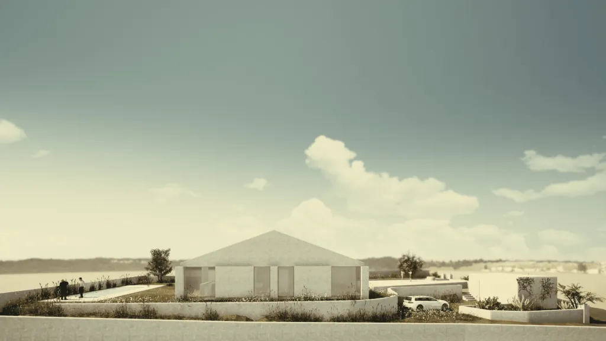

Quanto custa construir uma Casa, e os factores que influenciam o custo final
Construir uma moradia unifamiliar é um projecto empolgante, mas antes de avançar com esta decisão, é essencial ponderar cuidadosamente os custos envolvidos. Frequentemente, surgem despesas associadas à construção que podem não ter sido inicialmente contempladas no orçamento, o que torna fundamental ter uma visão abrangente de quanto poderá custar este tipo de obra.
Num contexto de crise habitacional, a criação de mais habitações é crucial para responder à crescente procura. Medidas como a conversão de espaços comerciais em habitação, sem necessidade de autorização prévia do condomínio, já estão em vigor e visam precisamente aumentar a oferta de alojamento. No entanto, para muitos, construir uma moradia de raiz continua a ser uma opção viável e apelativa.
Se está a considerar construir a sua própria casa, é provável que já tenha iniciado a fase de pesquisa, sendo o custo de construção um dos factores decisivos para o avanço do projecto. Existem várias questões a ter em conta ao estimar o orçamento necessário, e é comum que surjam dúvidas frequentes ao longo do processo de planeamento.
Abaixo, exploramos alguns dos principais factores que influenciam o custo final da construção de uma moradia unifamiliar:

Factores a ter em conta:
Onde está a construir?
A localização do terreno é um dos fatores mais influentes no custo de construção. Para além do preço do próprio terreno, a área onde decide construir pode impactar os custos de mão-de-obra, materiais e até a logística da obra. Em zonas mais afastadas ou de difícil acesso, por exemplo, o transporte de materiais pode encarecer o projeto.
Qual é a área de construção?
O tamanho da área a ser construída é, naturalmente, um fator determinante no custo da obra. No entanto, algumas divisões, como cozinhas ou casas de banho, são mais dispendiosas de construir do que outras devido à complexidade das instalações necessárias. Além disso, a inclusão de espaços de lazer como piscinas, spas ou saunas, bem como áreas de lavandaria, pode aumentar significativamente o orçamento final.
Que tipo de materiais pretende utilizar?
A escolha dos materiais tem um grande impacto no custo total da construção. Se, por exemplo, houver uma alta no preço da madeira ou de outros materiais, o orçamento será afetado. Há materiais mais económicos, mas a qualidade e a durabilidade também devem ser consideradas. Optar por materiais de menor custo pode parecer uma poupança inicial, mas a longo prazo pode resultar em maiores gastos de manutenção ou substituição.
Quão complexo é o projeto de arquitetura?
A complexidade do projeto arquitetónico é outro fator essencial. Projetos com detalhes ornamentados, formas arquitetónicas mais ousadas ou que incluam soluções tecnológicas avançadas, como domótica, tendem a ser mais caros do que uma casa com um design mais simples e standardizado. Adicionalmente, a escolha de revestimentos de fachadas específicos, materiais mais duráveis ou soluções que envolvam estruturas complexas pode encarecer o projeto.
Importa sublinhar que um projeto bem concebido pode, a longo prazo, resultar numa construção mais económica do que um projeto mal elaborado. Investir em componentes de maior qualidade pode significar uma poupança ao longo do ciclo de vida da habitação, seja em manutenção, eficiência energética ou durabilidade.
O equilíbrio entre custo inicial e custos de manutenção
É comum, durante o processo de construção, tentar reduzir os custos iniciais, o que muitas vezes se traduz na escolha de materiais mais baratos ou em soluções que minimizem os custos no curto prazo. Contudo, essa redução inicial pode levar a maiores despesas de manutenção e de consumo energético no futuro. Por exemplo, a escolha de materiais de isolamento de baixa qualidade ou de vidros com menor capacidade térmica pode resultar em contas de energia mais elevadas ao longo do tempo.
Portanto, é essencial encontrar um equilíbrio entre o custo de construção inicial e os custos de operação e manutenção a longo prazo. Uma solução mais sustentável pode resultar em poupanças significativas ao longo da vida útil do edifício.
A importância do programa preliminar
A elaboração de um programa preliminar em conjunto com o arquiteto é um passo fundamental. Este processo permite-lhe compreender melhor as dimensões do edifício, o seu desempenho, os custos e os prazos, ao mesmo tempo que oferece ao arquiteto uma ideia clara das suas necessidades e expectativas. O programa inicial ajuda a definir quais os espaços essenciais e quais os que correspondem a desejos mais pessoais, permitindo uma priorização eficaz.
As várias fases do projeto de arquitetura são um processo cumulativo de decisão, em que as suas preferências e as sugestões do arquiteto vão formando o plano final da obra.
Localização: escolha do terreno certo
A primeira etapa fundamental na construção de uma moradia de raiz é a seleção do terreno. Este representa o primeiro grande investimento no custo total de construção, e deve ser ponderado cuidadosamente. Ao comprar um terreno, é essencial reunir toda a informação relevante, pois terrenos inadequados podem requerer investimentos adicionais para resolver problemas como a presença de linhas de água ou a necessidade de corrigir declives, o que envolve, por exemplo, movimentação de terras.
Além disso, é importante garantir que o terreno está inserido numa área legalmente autorizada para construção e que dispõe das infraestruturas básicas, como água, gás e eletricidade. Caso contrário, terá de contar com esses custos extra para instalar estas infraestruturas, e verificar previamente a viabilidade de construção. Como mencionado anteriormente, a localização geográfica tem um impacto significativo no preço. Terrenos perto da praia, com vistas ou em zonas urbanas, especialmente nas áreas metropolitanas de Lisboa e Porto, são geralmente mais caros do que terrenos em zonas rurais ou com menos acessibilidades.
É também importante salientar que adquirir um terreno não garante automaticamente a sua utilização sem restrições legais. Existem regulamentos específicos a serem cumpridos, sendo aconselhável formalizar um pedido de informação prévia à autarquia, para obter uma noção clara sobre a viabilidade construtiva e as limitações do terreno.
Dimensão da habitação e área envolvente
O tamanho da moradia é um dos fatores determinantes no custo total da construção. Mesmo que se opte por materiais mais económicos, a dimensão da habitação influencia diretamente o orçamento, já que uma casa maior exige não apenas mais materiais, mas também mais mão-de-obra, o que resulta num aumento significativo nas horas de trabalho necessárias.
Uma solução a considerar pode ser a construção de uma casa pré-fabricada, que, em muitos casos, se apresenta como uma opção mais acessível e rápida de construir. Este tipo de construção permite uma redução dos custos de mão-de-obra e de tempo, uma vez que grande parte dos componentes é fabricada fora do local e posteriormente montada no terreno. Para muitos proprietários, esta pode ser uma alternativa eficaz em termos de economia e eficiência.
Mão-de-obra necessária para construir uma moradia
A construção de uma casa exige a colaboração de uma equipa multidisciplinar, o que pode tornar-se um desafio em termos de coordenação e supervisão dos vários profissionais envolvidos nas diferentes fases da obra. Delegar o projeto a um construtor ou empresa especializada pode ser uma solução prática, aliviando-o da carga de gerir a contratação de profissionais e a logística de fornecimento de materiais.
As várias etapas de construção começam com as fundações e a estrutura, geralmente em betão armado. Embora existam opções de construção com estruturas metálicas ou de madeira, o betão é o material mais comum para as bases e fundações. Esta fase inclui a criação das lajes de pavimento, pilares, vigas e a laje de cobertura. Uma vez que o betão atinge a sua resistência, segue-se a construção das paredes que encerram o espaço interior.
Posteriormente, são instaladas as infraestruturas necessárias para o funcionamento da casa, como redes de água, esgotos, eletricidade, gás, telecomunicações e sistemas de climatização. Estas intervenções abrangem tanto o interior como o exterior da moradia, com as devidas ligações aos ramais públicos.
Depois de finalizada a laje de cobertura e instaladas as infraestruturas, procede-se à impermeabilização e ao isolamento da cobertura, que pode ser revestida com telha cerâmica, painéis sanduíche (em coberturas inclinadas), lajetas, seixo rolado ou até mesmo uma cobertura vegetal, no caso de coberturas planas.
As janelas e portas, que desempenham um papel importante no isolamento térmico e acústico, devem ser instaladas por profissionais qualificados. Estes asseguram que os caixilhos são instalados corretamente, com a precisão necessária para garantir o nivelamento e o acabamento perfeito das soleiras, peitoris e remates.
Com o exterior da moradia fechado, passa-se à fase dos acabamentos interiores. Esta fase, que inclui o revestimento de paredes, colocação de pavimentos e instalação de mobiliário fixo, exige especial atenção ao detalhe e à qualidade dos materiais e da mão-de-obra, sendo determinante para o resultado final da construção.
A última etapa da obra envolve o tratamento da área exterior. No caso de uma moradia, o terreno envolvente deve ser devidamente limpo de detritos de construção e preparado para ser ajardinado. Pavimentos exteriores e muros devem ser finalizados de acordo com o projeto, garantindo que o espaço exterior complementa harmoniosamente o interior.
Orçamentos detalhados e comparáveis
Como é natural, os orçamentos variam de empresa para empresa e entre profissionais. Um dos fatores que mais influencia o preço total da construção são precisamente os orçamentos que recebe. Para garantir estimativas fiáveis e comparáveis, o ideal é começar por elaborar um caderno de encargos, bem como ter os projetos de arquitetura desenvolvidos em todas as suas fases. Este guião detalhado é essencial para assegurar que a obra será executada conforme as suas especificações e permite-lhe obter orçamentos reais e credíveis, em vez de valores generalizados com base no custo por metro quadrado.
Para referência, o custo da construção por metro quadrado é uma variável difícil de definir com exatidão, pois depende de muitos fatores, o que provoca oscilações significativas no preço final. No entanto, em média, os custos para uma construção nova situam-se entre os €1800 e os €2700/m², excluindo as particularidades do terreno e do projeto.
Ao solicitar vários orçamentos, é importante garantir que todas as propostas incluem os mesmos trabalhos, de forma a serem comparáveis. Com isto, terá uma base sólida para negociar os valores e optar pela solução que ofereça melhor custo-benefício.
Como os empreiteiros estabelecem os seus honorários?
Os honorários dos empreiteiros incluem tanto o lucro como as despesas gerais. Normalmente, cobram uma margem de 20% a 30% sobre o custo dos materiais e da mão-de-obra. Além disso, é frequente incluírem uma margem para cobrir possíveis garantias futuras relacionadas com a construção da moradia.
Qual é o custo por metro quadrado para uma nova construção?
Se está a construir de raiz, deve contar com um custo aproximado de €1800 a €2700/m², dependendo de várias condições, como as especificidades do terreno, o design e os materiais escolhidos.
A construção nova é mais burocrática que uma renovação ou remodelação?
Uma das razões pela qual a renovação pode ser mais acessível do que uma construção nova está relacionada com a burocracia envolvida. Se o projeto se restringir ao interior da habitação e não incluir alterações estruturais ou exteriores, pode estar isento de certos procedimentos administrativos, como o estudo de vulnerabilidade sísmica, enquadrando-se nas obras isentas de controlo prévio (com algumas exceções, como em casos de servidões administrativas).
Por outro lado, se a renovação incluir a adição de uma extensão ou alterações exteriores, o procedimento de controlo prévio torna-se necessário. Este mesmo processo aplica-se à construção de uma moradia nova, onde um conjunto de etapas administrativas e legais precisa de ser seguido desde o início.